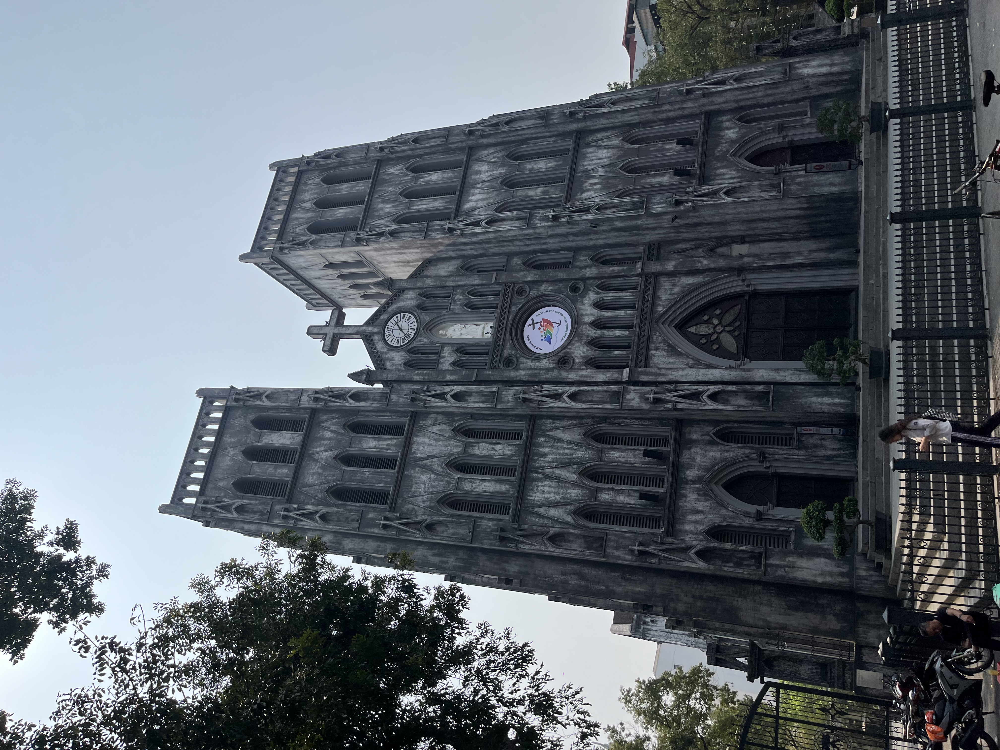
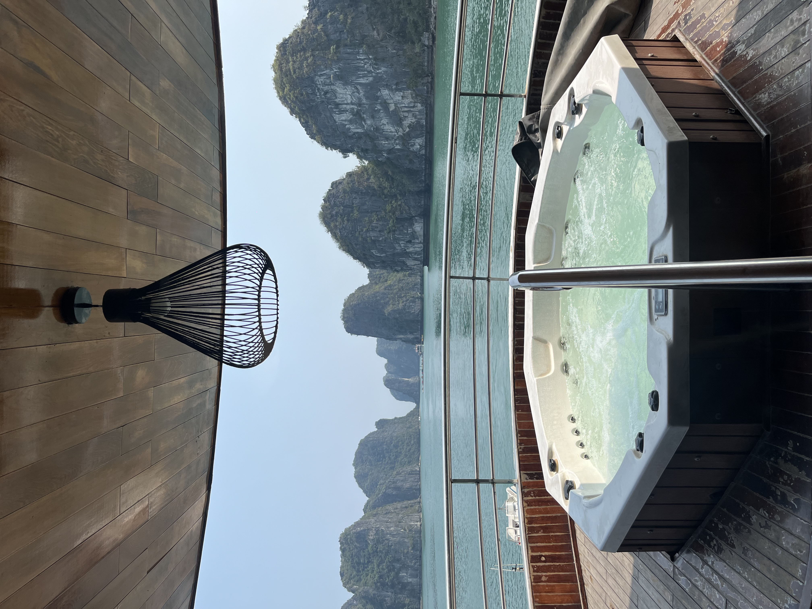
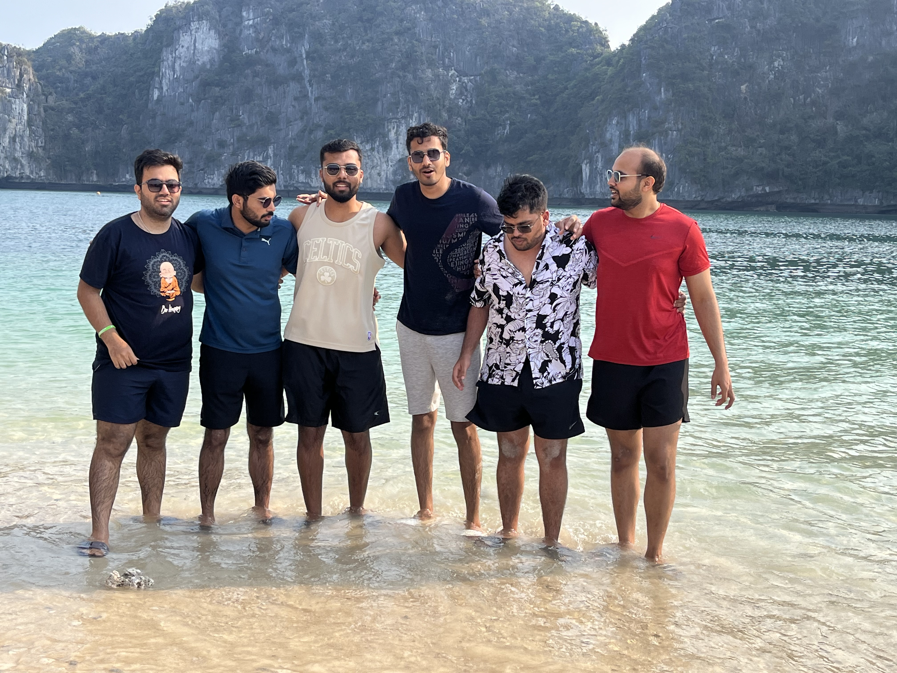
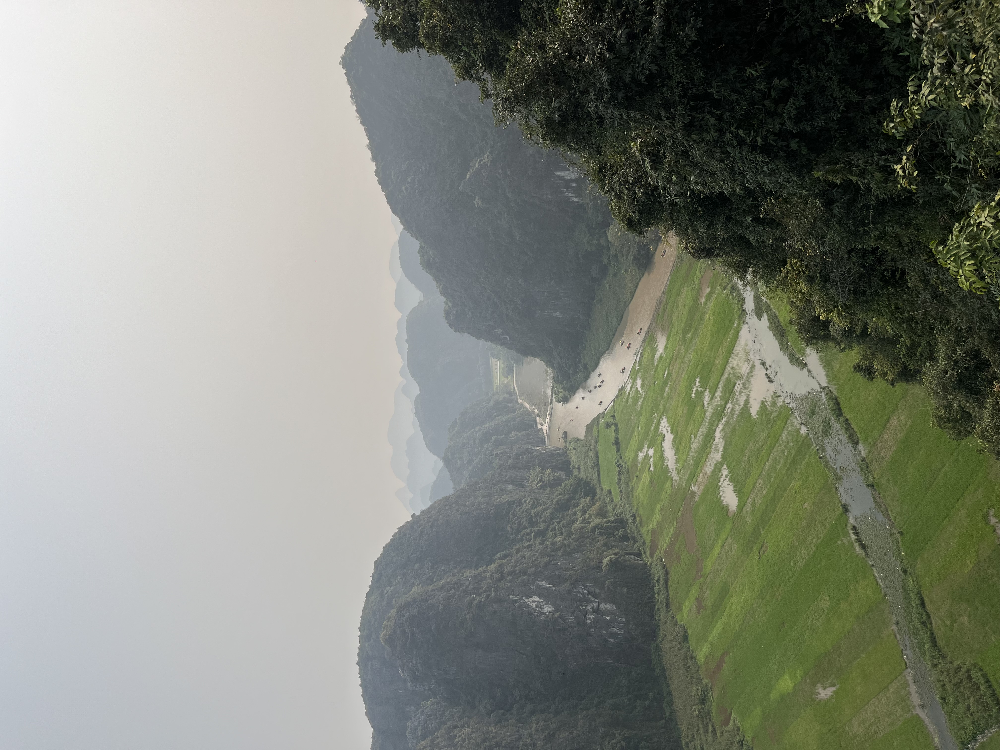
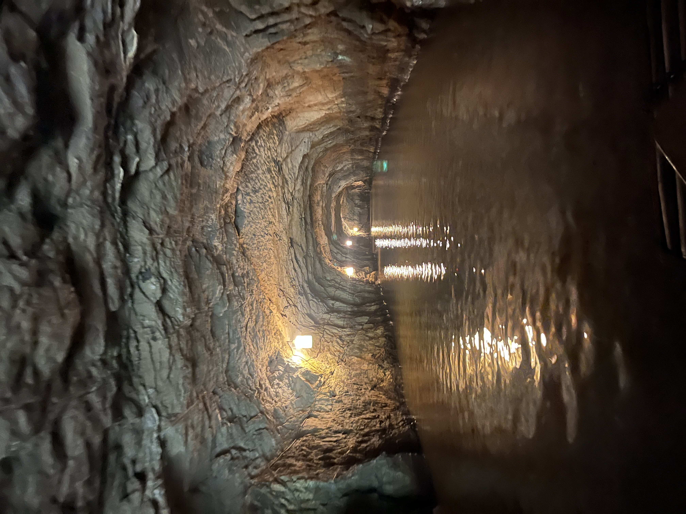
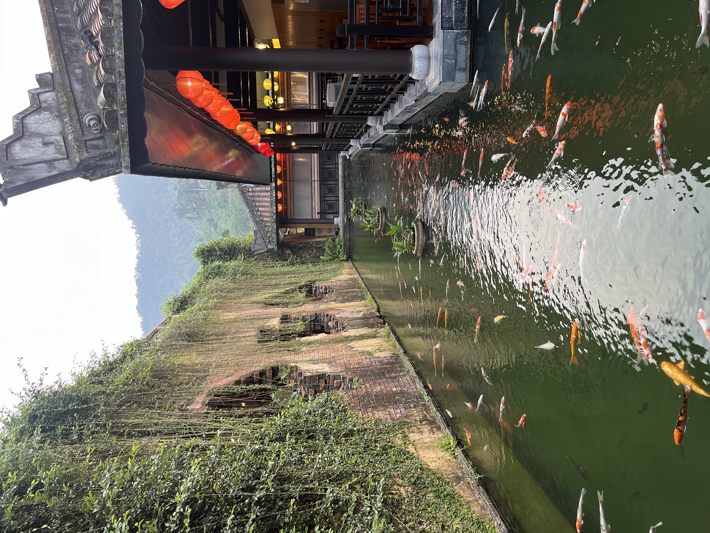
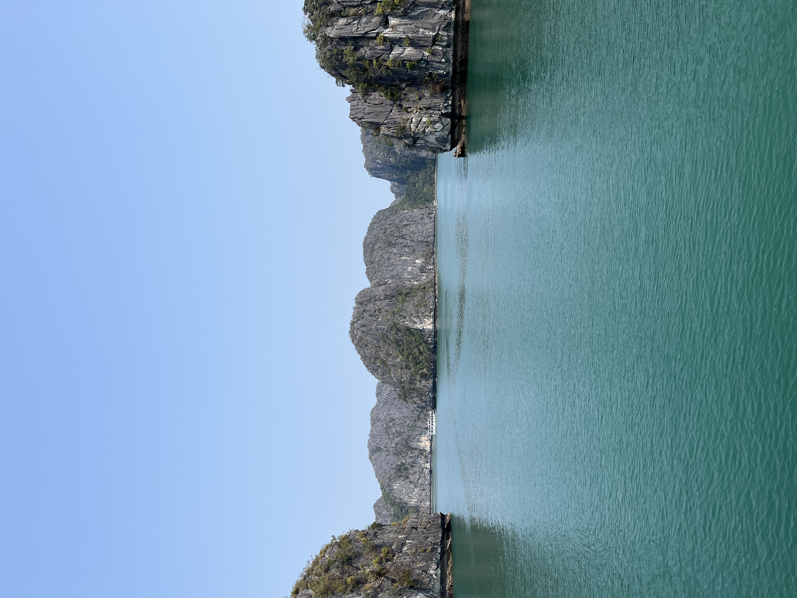
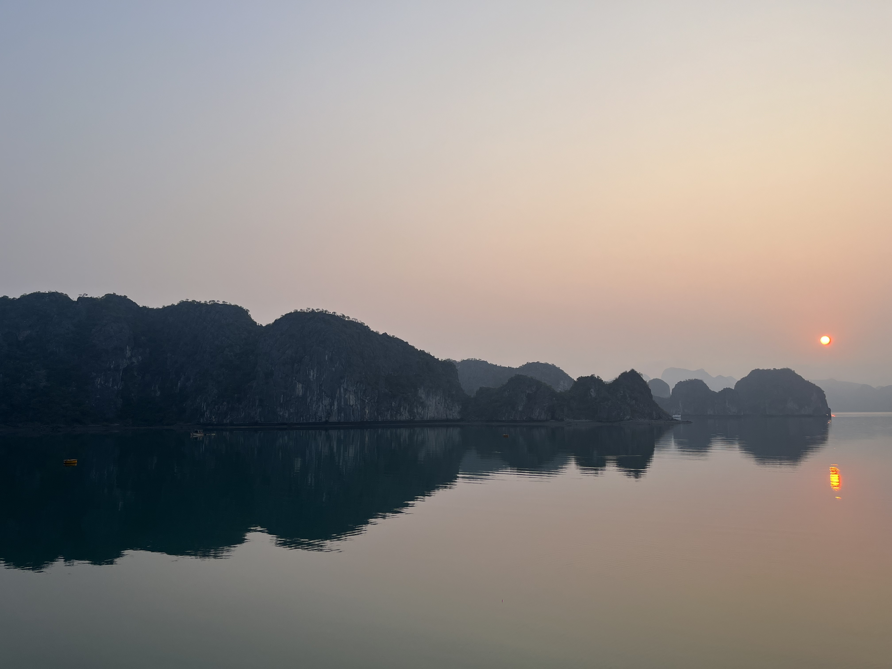
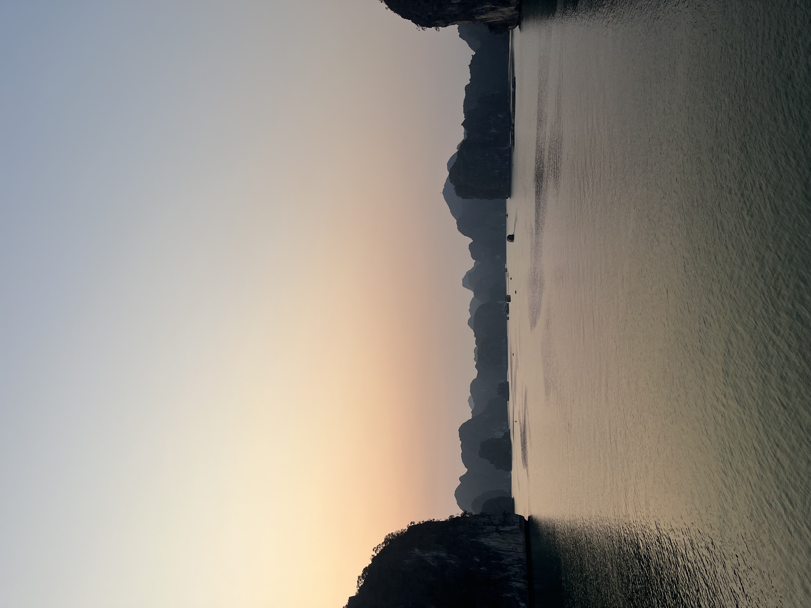

🇹🇭
Thailand Diaries
7 days between Phuket, Phi Phi Islands and a Full Moon Party finale on Koh Samui.
Read the Diary →Nine days from Hanoi's beer street to a Halong Bay cruise, Ninh Binh's countryside, the caves of Phong Nha, and lantern-lit Hoi An.
Hanoi → Halong Bay → Ninh Binh → Phong Nha → Hoi An → Da Nang → Ba Na Hills
Overnight buses, ferries, rented bikes & scooters — hostels/homestays book almost everything for you
Vietnamese Dong (VND)
e-Visa for Indians (~$25)
Every stop, every cost, exactly how it happened.

St. Joseph's Cathedral, spotted on the city tour.

The in-room jacuzzi view — best decision of the trip.

The crew at the island stop, before heading on to Ninh Binh.

The boat ride through Trang An's caves and rice paddies.

Two kilometers of kayaking through the cave, guided only by helmet lights.

Lanterns and koi ponds — the Hoi An evening glow.



What the itinerary adds up to, per person — flight cost sourced from current India–Hanoi fare averages since it wasn't in the original diary.
Approximate figures for 2026 — the Halong Bay cruise and Phong Nha cave expedition are the two biggest line items, so package deals and off-season timing make the most difference here.
7 days between Phuket, Phi Phi Islands and a Full Moon Party finale on Koh Samui.
Read the Diary →